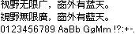

字样资料 / Olympus m:robe MR-100
Olympus m:robe MR-100 · 12×12
20,278个映射槽中20,277个像素完整、20,274个非空；非空基本区／扩展A汉字16,400个，另有36个兼容汉字。GB2312汉字6,763/6,763、Big5基本汉字13,061/13,061及两兼容汉字齐全；不是全部Big5符号覆盖。同层95个可打印ASCII有映射，空格为空、94字非空。唯一尾部少4字节的U+3164排除，不补零，不影响汉字、ASCII与固定样文。 · 12×12 · 简体、繁体
放大观察 · 3×

原尺寸 · 1×
来源与字样信息
- 家族
- Olympus m:robe MR-100
- 排版说明
- 固定简繁与英数三行保留原存字宽与像素，汉字12×12、同层ASCII宽2–12px高12px。按原存宽连续放置、行距16px仅为诊断排版。运行时advance、bearing和基线未由设备或原程序独立确认，不冒充实机排版；不裁框、补画、平滑或换字体。
- 字符框
- 12×12 px
- 字面／墨迹
- 11×12 px
- 字符范围
- 简体、繁体
- 样本文字
- 视野无限广，窗外有蓝天。 視野無限廣，窗外有藍天。
- 拉丁样文
- 0123456789 AaBb GgMm !?:+-.
- 覆盖说明
- 20,278个映射槽中20,277个像素完整、20,274个非空；非空基本区／扩展A汉字16,400个，另有36个兼容汉字。GB2312汉字6,763/6,763、Big5基本汉字13,061/13,061及两兼容汉字齐全；不是全部Big5符号覆盖。同层95个可打印ASCII有映射，空格为空、94字非空。唯一尾部少4字节的U+3164排除，不补零，不影响汉字、ASCII与固定样文。
- 缺字
- 样文无缺字
- 样张类型
- 2.17V保存包内原生1-bit点阵；汉字12×12存储及同层不等宽ASCII。
- 风格
- 未分类
- 用途
- 设备界面
- 字形来源
- 从bagder/sansa固定提交保存的MR-100升级器解包件静态读取MR100.fnt，不是本次直接取得原厂EXE或Rockbox替代字体。包内两份INI均为2.17V，原MI4历史MD5一致，官方2005-05-30公告独立对应。原Unicode映射与52字节记录给出像素位置，逐行高位在左。2004年容器时间戳不当作字体设计年。
- 授权状态
- 未确认开放再分发授权
- 许可说明
- 第三方保存及解析方法不等于原字体开放许可。仅展示固定小样图、必要聚合事实与无字模离线重绘工具；不公开保存包、FNT、MI4、完整字模或字库子集。使用与再分发仍受原权利约束。
- 说明
- 汉字通常11×11墨迹，但桅、淖、费用足12行，最大墨迹11×12，不能裁为11×11。Dotum12共同7,083字中434精确同形、平均Dice 0.823940，存在局部高相似；全部已查来源精确并集1,190/16,400，不是独创证明。冻结比较覆盖原196/241个ID，另直比PSP，相当于收录前197/242个ID，45个缺口仍在，部分来源仅小样本；不称全站全库去重。厂方手册仅说明屏幕字体属于Ricoh，不能据此确认所有字模作者或与另一Ricoh库相同。
- 获取方式
自行取得有权处理且SHA匹配的本地MR100.fnt。工具只离线重绘已批准的固定三行PNG，不联网、不执行固件、不导出任意文字、完整字体或字库子集。
- 来源
- Daniel Stenberg保存的MR-100升级器解包目录（固定提交）
- 原生证据
说明：原Unicode表与两套像素偏移一致；20,277个完整槽、2,898,744个存储像素经独立Pillow解码及字节回包验证。唯一U+3164短尾排除；固定样图另作源到PNG独立回归。
source_sha256：e81b038173cabc11680e8e3f11a528c5b668420853014a94e8b9ce95de248a4e
sourceBytes：1781424
firmwareVersion：2.17V
firmwareSampleYear：2005
mappedCharacters：20278
completeCharacters：20277
nonblankCharacters：20274
nonblankCjk：16400
compatibilityHan：36
gb2312Han：6763
big5Han：13061
big5ExpectedHan：13061
big5CompatibilityHan：2
printableAscii：95
nonblankAscii：94
excludedIncompleteCodepoints：U+3164
bitDepth：1
查看原生设计来源
字体使用与再分发按原来源许可执行。